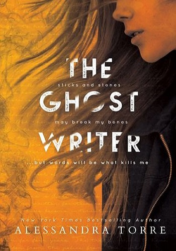

The Ghostwriter oleh Alessandra Torre
Ines Ayu Mega | 11 Juli 2020

Review The Ghostwriter oleh Alessandra Torre – Buku yang sangat menakjubkan. Tidak ada kata lain yang dapat mengambarkan buku novel ini selain menakjubkan. Ya benar, aku sangat terpaku pada buku novel ini dari awal membacanya hingga akhir ceritanya.
Buku ini menceritakan seseorang wanita yang bernama Helena Ross, seorang pengarang buku novel yang telah menerbitkan 15 novel romantisme. 10 dari novel itu adalah bestseller di seluruh dunia. Kini, Helena Ross telah siap untuk menulis buku novel terakhirnya. Namun belakangan, dia diagnosa menderita kanker yang sangat parah, dan hanya memiliki sekurang kurangnya 3 bulan untuk hidup. Jadi, sebelum Helena meninggal dunia, dia ingin menulis karya novel terakhirnya yang dimana cerita pada novel itu adalah bagian dari hidupnya selama ini. Novel terakhir ini bukanlah novel romantisme seperti yang selama ini ditulisnya, Tidak ada good ending seperti yang selama ini diciptakannya. Novel ini hanya berisi kebenaran, yang selama ini disembunyikannya selama 4 tahun. Kebenaran yang ditutupi kepada keluarga, polisi, pasangannya, dan ditutupi kepada seluruh dunia.
Buku terakhir?
Tidak, ini sebuah pengakuan.
Helena sadar bahwa karena penyakit yang dideritanya, dia tidak akan bisa menyelesaikan buku ini kecuali dia menyewa seorang ghostwriter untuk membantunya. Oleh karena itu, oleh agen penerbitnya, dia mendapatkan seseorang bernama Marka Vantley. Well, Ini hanya setup pada novel ini dan sebelebihnya harus anda baca sendiri, karena aku tidak ingin memberikan spoiler.
Hal yang sangat kusukai dari buku ini adalah mengenai cerita di dalam cerita. Sangat menakjubkan. Aku berharap bahwa aku bisa memberikan pujian yang lebih bagus dari ini, tapi aku kurang pintar merangkai kata, jadi yang bisa kukatakan tentang buku ini adalah bahwa buku ini sangat menakjubkan, membuatmu adiktif, merangkulmu kedalam cerita, dan mengganggu emosional anda. Tidak banyak buku di luar sana yang dapat mempengaruhi jiwa dan emosional anda, namun buku ini justru adalah salah satunya.
Perlu diingat bahwa buku ini mungkin berjalan sedikit lambat, namun hal itu dilakukan untuk memberikan hint dan petunjuk kepada inti cerita tersebut. Jadi jika anda sudah membaca sekitar 60% dan masih bertanya tanya dan ingin menyerah pada buku ini, percayalah, anda harus membacanya hingga tuntas, anda tidak akan menyesalinya.
Alessandra Torre, penggarang buku ini, sedikit demi sedikit menguak cerita masa lalu Helena, dan karakteristik yang dibangun oleh Torre begitu bagus dan ceritanya di tulis dengan sangat indah pula, jadi sangat mudah untuk menyerap apa yang ditulis oleh Torre, sangat detil dan indah.
Tidak boleh terlewatkan juga quotes favorit dari buku ini yang mungkin dapat mewakili sebagian isi dari buku ini, “That is how life is, it gives us burdens to carry and doesn’t give a damn about the weight. We shoulder it or we break.”
Baca buku ini! Serius. Bagi anda yang suka dengan novel thriller, novel ini sangat sangat sangat kurekomendasikan untuk anda!